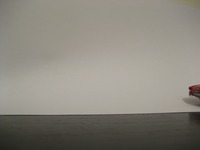
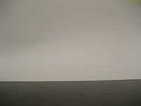

ImageMagick and ffmpeg combined can be used to turn still images into video. Both ImageMagick and ffmpeg have been around for years, and are readily available as packages with most Linux distributions. The tips below allow you to convert images on the command line, which for a may appear to be time consuming, but once you know how to do it you'll find it much faster than using a GUI!
ImageMagick includes "mogrify" which is a fine tool for easily changing image size and resolution. Great for converting images for uploading to the web, or preparing large images for video. For example, the following code re-sizes all *.JPG images to a maximum width of 800 pixels and a maximum height of 600 pixels. This will over-write the originals, so take copies of your snaps first!
mogrify -resize 800x600 *.JPGThis step is only needed if you want to create a smooth transition between the images.
Another fine part of ImageMagick is the ability to morph images together. In the following example we take all *.JPG files and create 10 images for each "gap" between the images. The resulting set of images are saved as XXXXX.morph.jpg, where X is the next number in the series.
convert *.JPG -delay 10 -morph 10 %05d.morph.jpgffmpeg can be used to stitch several images together into a video. There are many options, but the following example should be enough to get started. It takes all images that have filenames of XXXXX.morph.jpg, where X is numerical, and creates a video called "output.mp4". The qscale option specifies the picture quality (1 is the highest, and 32 is the lowest), and the "-r" option is used to specify the number of frames per second.
ffmpeg -r 25 -qscale 2 -i %05d.morph.jpg output.mp4Here's a simple example of how to create a video from the command line, using the resizing and morphing techniques we have gone through above. The example first creates a "temp" directory to work in, so we don't risk destroying the original images. Note: the morphing stage may take a while, so be patient!
mkdir temp cp *.JPG temp/. mogrify -resize 800x800 temp/*.JPG convert temp/*.JPG -delay 10 -morph 10 temp/%05d.jpg ffmpeg -r 25 -qscale 2 -i temp/%05d.jpg output.mp4 # rm -R temp
As an example, here's a sample video showing the stitching and morphing above.
 
# Create a directory and copy the original images there for manipulation: mkdir temp cp *.JPG temp/. # Resize the images: mogrify -resize 200x200 temp/*.JPG # Create the morph images convert temp/*.JPG -delay 10 -morph 5 temp/%05d.jpg # Stitch them together into a video ffmpeg -r 50 -qscale 2 -i temp/%05d.jpg output.mp4